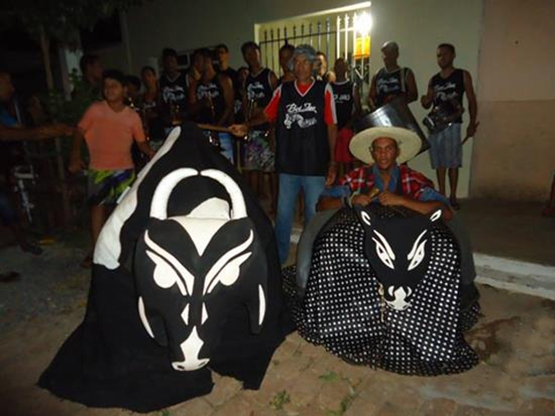
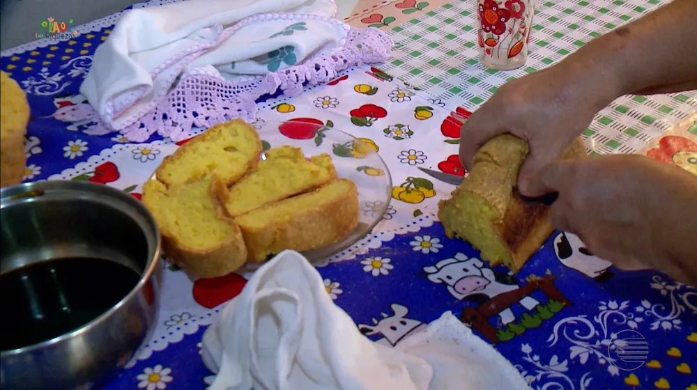

Angical tem uma cultura rica e diversificada, influenciada pelos índios, pelos colonizadores portugueses e pelos migrantes de outras regiões do Brasil. A cidade possui muitas áreas de lazer, como o riacho que abastece a população e serve de ponto de encontro para as lavadeiras. A religiosidade também é forte, com a devoção à Nossa Senhora do Rosário, padroeira da cidade, e a realização de novenas, procissões e missas. A música, a dança e o artesanato também fazem parte da cultura angicalense, com destaque para o forró, o bumba-meu-boi e as peças de cerâmica
Essa imagem mostra um evento cutural de Angical,relacionado ao bumba-meu-boi,uma dança folclórica do nordeste brasileiro.
Festejos: Angifolia e Angical fest
Angical é uma cidade bastante festiva, que realiza vários eventos ao longo do ano. Alguns dos principais são: o Angifolia e o Angical Fest, que são carnavais fora de época que atraem muitos visitantes; o Morrin Fest, que é uma micareta do bairro Nossa Senhora do Rosário; o aniversário da cidade, que é comemorado em 24 de julho com shows e atividades culturais; e o festejo de Nossa Senhora do Rosário, que acontece em outubro e é o mais tradicional da cidade, com dez dias de celebrações religiosas

A imagem mostra a estátua de Nossa Senhora do Rosário, a padroeira da cidade de Angical. Ela é uma figura religiosa muito importante para os angicalenses, que realizam um festejo em sua homenagem
Culinária
A culinária de Angical é típica do sertão nordestino, com pratos à base de carne de sol, bode, galinha caipira, feijão, arroz, farinha, mandioca, milho e frutas da região. Um dos quitutes mais famosos da cidade é o bolo pança, que é um bolo de massa simples, mas muito saboroso, que leva esse nome porque deixa as pessoas de "pança cheia", ou seja, bem alimentadas. A dona Doca é uma das principais produtoras desse bolo, que é vendido em sua casa e em outros pontos da cidade.
a cidade de Angical existe um tradicional bolo feito por angicalense muito conhecida na região. O bolo pança é famoso por deixar as pessoas de "pança cheia", expressão que significa barriga cheia, bem alimentado.